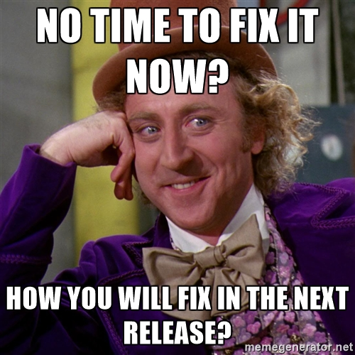
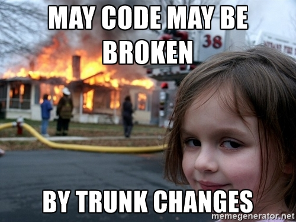
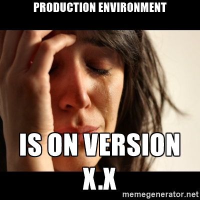

Why you should develop on trunk?
Available on: http://pokoli.github.io/developing-on-trunk
Disclaimer
Just personal opinion/experience
Feel free to follow your own rules
What does trunk mean?
The latest development version of tryton
So it makes sense to use it for development doesn't it?
How to obtain trunk?
- hg (n)clone -b default
- pip install --find-links https://trydevpi.tryton.org/
How is trunk?
How is trunk?
How is trunk?
- Like the new tryton release
- So stable
- Constantly Evolving (until feature freeze)
How to update:
- hg (n)pull -u --rebase
- pip install --upgrade --find-links https://trydevpi.tryton.org/
Remainder: Development Process
- BluePrint (discussion)
- CodeReview
- Automated Test + CI
- Feature Freeze
- PyPI
- No API changes in released versions
Why to use trunk?
- More discussions with comunity
- Only way to improve clients
- Only way to improve API
- Features developed by others
- Better code thanks to review
- Less bugs on releases
- Migration before release
- Upload your modules to PyPI
Why to use trunk?
Avoid technical debt
What's technical debt?
Extra development work that arises when code that is easy to implement in the short run is used instead of applying the best overall solution
Technical debt
Technical debt
Fix technical debt
Fix technical debt
Great, but...
Great, but...
My code may be broken by trunk changes
- You will have to fix in the next migration also...
- Not forced to update your environment
- It's easier with smaller changes
- You will use more newer features
- tryton-commit (mailing list or IRC)
Great, but...
Great, but...
Production environment is on version X.X
- Migrate to latest stable (as you will do someday)
- Use branches
- Backport changes
- No new features on older versions
Great, but...
(put whatever you want here)
Conclusions
Conclusions
Conclusions
Conclusions
I want to help (Seriously)
I want to help (Seriously)

Thank you!
The presentation code is avaiable on